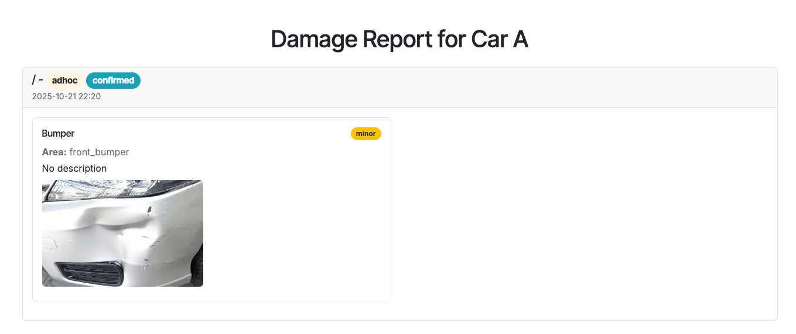
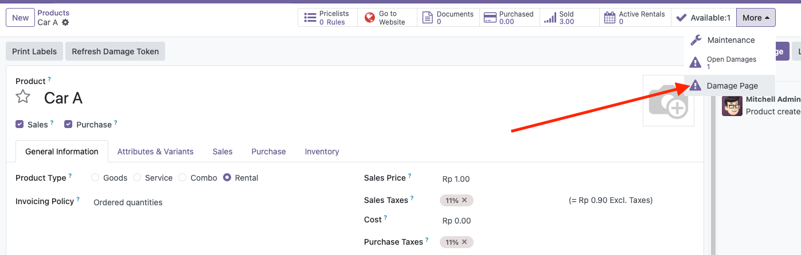

Odoo 18 Module for Managing and Displaying Rental Product Damages
The Rental Product Damage Tracker module provides an efficient way to record, monitor, and display damages associated with rental products. It integrates seamlessly with your existing Odoo Rental or Sales workflow.
Draft, Confirmed, Closed./rental/damage/<token>) to share with customers.
Example of public page showing open damages with images.

Click the “Damage Page” button to open the public damage report URL.